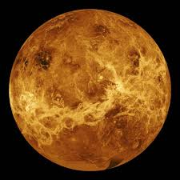

Conhecido como “Estrela d’alva”, por causa de seu forte brilho, Vênus tal qual Mercúrio é um planeta que não possui satélite. Visível do nosso planeta, Vênus é o segundo planeta a partir do Sol e o mais perto do planeta Terra. Curioso notar que mesmo sendo o segundo planeta a partir do Sol (depois de Mercúrio), Vênus é o planeta mais quente do sistema solar, com temperaturas que podem atingir 480°C. Assemelha-se com o planeta Terra no tocante ao tamanho, composição, estrutura, massa, densidade e força gravitacional.